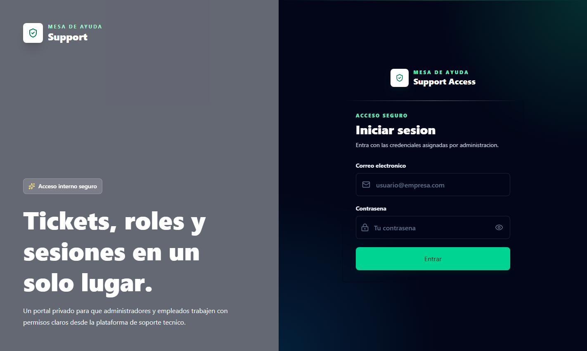
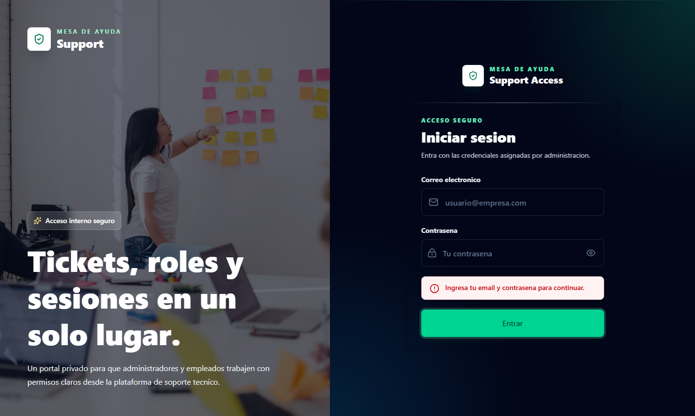
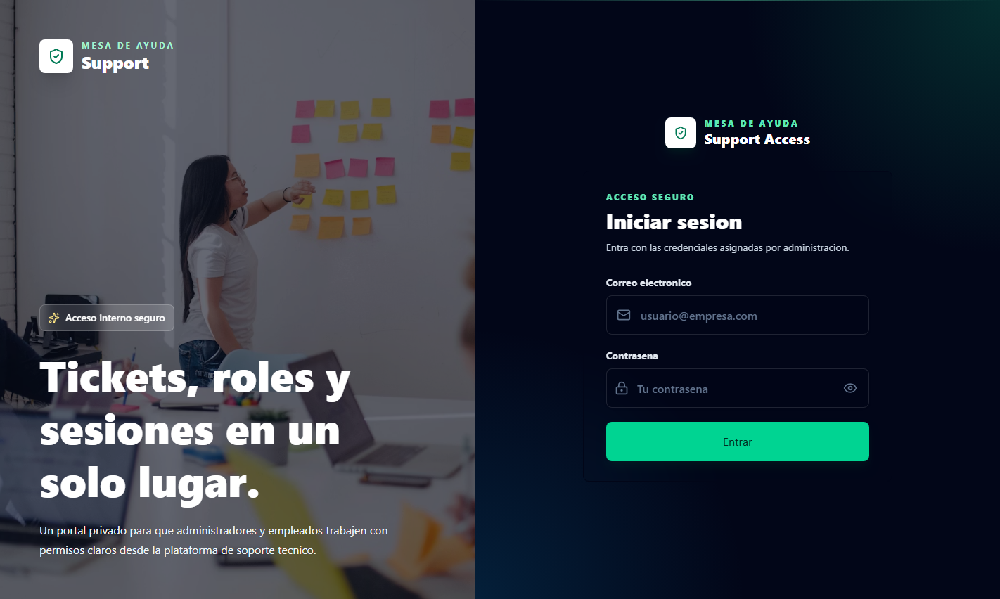
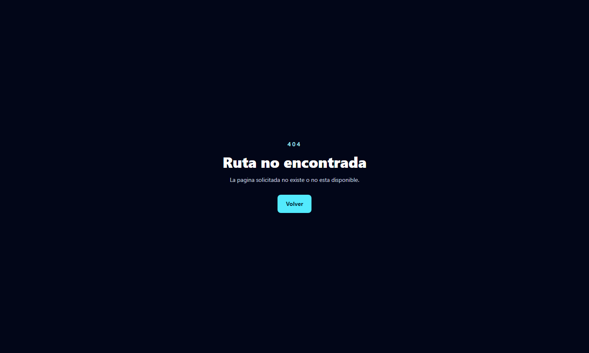
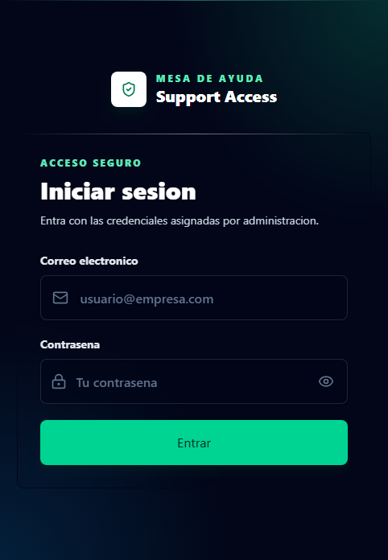
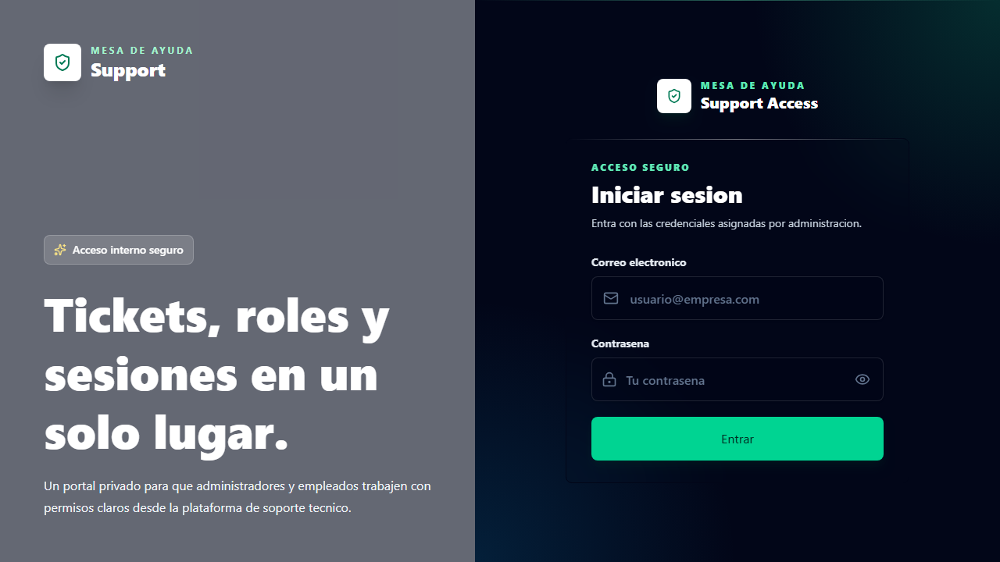
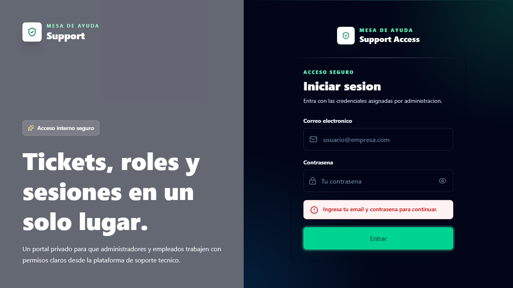
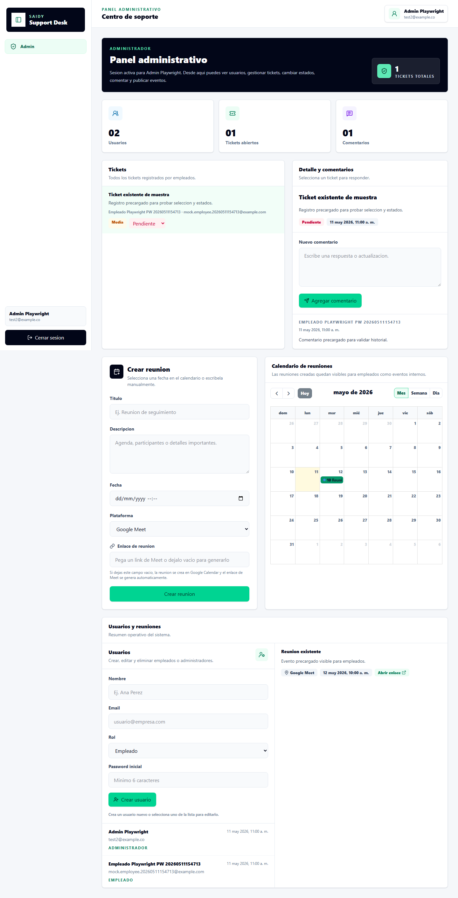
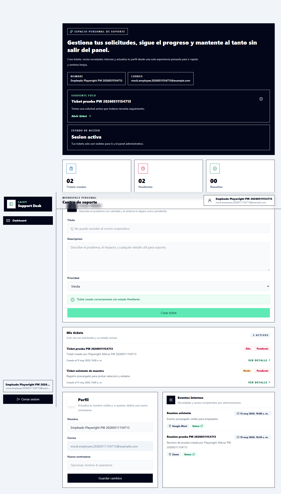

Proyecto: Mesa de ayuda Saidy | Fecha de ejecucion: 11 de mayo de 2026
Se valido la app con Playwright y Selenium sobre el build de produccion servido con
vite preview. Selenium paso su smoke test completo. En Playwright, el smoke test paso y el
flujo completo con Supabase simulado paso cuando se ejecuto de forma aislada; la corrida completa fallo en
el caso de credenciales reales porque la app mostro Failed to fetch y la prueba esperaba el
texto Credenciales incorrectas o Invalid login credentials.
| Herramienta | Comando ejecutado | Resultado | Notas |
|---|---|---|---|
| Build | npm.cmd run build |
PASO | Compilo TypeScript y Vite. Vite aviso que un chunk supera 500 kB. |
| Playwright smoke | npm.cmd run test:playwright |
PASO | Valido login, formulario vacio, redireccion de rutas protegidas, 404 y vista movil. |
| Playwright credenciales reales | npm.cmd run test:playwright |
FALLO | La pantalla mostro Failed to fetch durante login; el test esperaba mensaje de credenciales invalidas. |
| Playwright flujo mock | npx.cmd playwright test tests/e2e/full-creation-flow.spec.ts -g "runs creation" |
PASO | Creo usuario, reunion, ticket, comentarios, cambio de estado y elimino usuario con Supabase simulado. |
| Selenium smoke | npm.cmd run test:selenium |
PASO | Valido login, error de formulario vacio, proteccion de admin, 404 y viewport movil en Chrome headless. |
npm install npm.cmd run build
npm.cmd run test:playwright
Para repetir solo el flujo mockeado que paso en esta revision:
npx.cmd playwright test tests/e2e/full-creation-flow.spec.ts -g "runs creation"
Las capturas quedan en playwright-capturas/ y los artefactos de fallos quedan en
test-results/.
npm.cmd run test:selenium
Selenium usa Chrome headless y Selenium Manager. Si es la primera vez en una maquina nueva, puede necesitar
internet para descargar o localizar el driver de Chrome. Las capturas quedan en selenium-capturas/.
| Validacion | Resultado | Detalle |
|---|---|---|
| Carga de login | PASO | Se mostro la pantalla de inicio de sesion. |
| Validacion de formulario vacio | PASO | La app mostro el mensaje esperado. |
| Proteccion de /admin | PASO | La ruta protegida redirigio a /login. |
| Ruta 404 | PASO | La app mostro la pagina de ruta no encontrada. |
| Login responsive movil | PASO | La pantalla de login cargo en viewport movil. |








